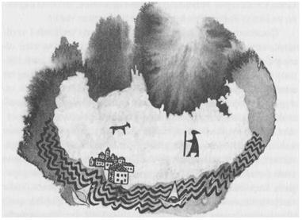

BİR: SİSTEKİ SAVAŞÇILAR

Başını, fırtına yüklü Kuzey Doğu Denizi'nden bir mil kadar yükseğe kaldıran tek bir dağdan oluşmuş Gont Adası, büyücüleriyle ünlüdür. Gont'un yüksek vadilerindeki kasabalarından, derin ve karanlık koylarındaki liman şehirlerinden, Adalar Diyarı'nın hükümdarlarına şehirlerde büyücü olarak hizmet eden veya Yerdeniz'de adadan adaya büyüler yaparak dolaşan birçok Gontlu çıkmıştır. Bazılarının anlattığına göre bunların en büyüğü, en azından en büyük gezgini, yaşadığı devirde hem ejderhalar efendisi hem de Başbüyücü olan Çevik Atmaca adında bir adammış. Çevik Atmaca'nın hayat hikâyesi gerek Ged'in Kahramanlıkları' nda gerekse başka şarkılarda anlatılmaktadır, ama bu öykü, onun ünlenmesinden, adına şarkılar yakılmasından önce olanların öyküsüdür.
Çevik Atmaca, Kuzey Yakası Vadisi'nin başındaki dağın yükseklerine kurulu Onakçaağaç adında bir köyde dünyaya gelmişti. Bu vadinin çayır ve tarlaları köyün aşağısından kademe kademe denize doğru iner. Bölgedeki diğer kasabalar Ar Nehri'nin kıvrımlarına kurulmuştur. Köyün yukarısında ise sadece, zirvenin kayasına ve karma doğru, tepe tepe yükselen bir orman vardır.
Çocukken taşıdığı ad olan Duny, ona annesi tarafından verilmişti; zaten annesinin ona verebildiği, sadece hayatı ve ismi olmuştu çünkü daha Çevik Atmaca bir yaşına varmadan annesi ölmüştü. Köyün tunçustası olan babası pek konuşmayan, suratsız bir adamdı. Duny'nin altı ağabeyi de yaşça ondan oldukça büyük olduğundan, toprağı işlemek, denizlere açılmak veya tunçustası olmak için Kuzey Yakası Vadisi'ndeki başka kasabalara giderek evden bir bir ayrılmışlardı. Çocuğu şefkatle yetiştirebilecek kimse kalmamıştı. Duny bir yaban gibi yetişti; kuvvetli bir ayrık otu; gürültücü, mağrur ve huysuz, boylu poslu, çevik bir oğlan. Köyün öteki çocukları ile birlikte dere kaynaklarının üzerindeki dik çayırlarda keçi otlatıyordu Duny; körükleri harekete geçirecek kadar kuvvetlenince de babası onu kamçı ve dayakla tunç işliğinde çırak olarak çalıştırmaya başlamıştı. Ama o pek bir işe yaramıyordu. Hep işten kaytarıp kaçıyor, ormanın derinliklerinde dolaşıyor, tüm Gont nehirleri gibi hızlı ve soğuk akan Ar Nehri'nin gölcüklerinde yüzüyor, sarp kayalık ve uçurumlardan ormanın tepesindeki, Perregal'dan sonra hiçbir adanın var olmadığı engin kuzey okyanusunu seyredebileceği zirvelere tırmanıyordu.
Köylerinde, ölen annesinin bir kız kardeşi yaşıyordu. Bebekken yapılması gereken şeyleri bu teyzesi yerine getirmişti, fakat kadının da kendisine ait işleri vardı; Duny kendi başının çaresine bakabilecek bir duruma gelince de onunla artık hiç ilgilenmemeye başladı. Fakat bir gün, Duny henüz yedi yaşında, dünyadaki sanatlar ve güçler hakkında hiçbir şey bilmeyen cahil bir çocukken, teyzesinin kulübenin damına çıkıp aşağıya inmek istemeyen bir keçiye söylediği sözleri duydu: Keçi, teyzesinin söylediği tekerlemeyi duyunca hemen atlayıp yanına gitmişti. Ertesi gün, Yüksek Şelâle' deki çayırlarda, uzun kıllı keçileri otlatırken Duny anlamını, işlevini ve ne tür sözcükler olduğunu bilmeden, duymuş olduğu sözcüklerle onlara seslendi:
Noth hierth malk man
hiolk han merth han!
Duny tekerlemeyi yüksek sesle haykırınca keçiler ona doğru geldiler. Hızla geldiler, hepsi bir arada ve hiç ses çıkarmadan. Sarı gözlerindeki karanlık yarıktan ona baktılar.
Duny güldü ve ona keçiler üzerinde iktidar sağlayan tekerlemeyi bir kez daha haykırdı. Keçiler ona daha da yaklaştılar; ıkış tıkış etrafını sardılar. Birdenbire Duny keçilerin kalın sivri boynuzlarından, tuhaf gözlerinden ve tuhaf sessizliklerinden ürktü. Onlardan kurtulup kaçmak istedi. Etrafında bir yumak olmuş keçiler de onunla beraber koştular; sonunda bütün keçiler, görünmez bir iple bir araya bağlanmış gibi saldırırcasına köye vardılar, çocuk da ortalarında ağlıyor ve böğürüyordu. Köylüler keçilere sövmek ve oğlana gülmek için evlerinden dışarı fırladılar. Aralarından, oğlanın teyzesi geldi; o gülmüyordu. Keçilere bir şey söyledi ve hayvanlar büyüden kurtularak meleşip otlamaya başladılar.
"Benimle gel," dedi teyzesi Duny'ye.
Duny'yi, tek başına yaşadığı kulübesine götürdü. Genellikle buraya çocukların girmesine izin vermezdi; çocuklar da buradan korkarlardı zaten. Kulübe alçak ve karanlık, penceresizdi; civanperçemi, solucan otu ve defne gibi şifalı bitkilerden çıkan güzel kokularla doluydu. İçerde teyzesi ateşin önüne bağdaş kurarak oturdu, dağınık siyah saçlarının arasından yan gözle oğlana bakıp keçilere ne dediğini, tekerlemenin ne olduğunu bilip bilmediğini sordu. Oğlanın hiçbir şey bilmediği halde keçileri, yanına gelip onu izlemeleri için büyü ile bağladığını öğrenince Duny'nin, gücün malzemesine sahip olduğunu anladı.
Kızkardeşinin oğlu olarak ona hiçbir şey ifade etmeyen bu oğlana, artık başka bir gözle bakmaya başladı. Onu övdü ve ona daha çok hoşlanacağı tekerlemeler öğretebileceğini söyledi. Bir salyangozu kabuğundan dışarı baktıracak bir sözcük veya bir şahini gökyüzünden çağıracak bir isim gibi.
"Evet, öğret bana o ismi!" dedi keçilerin uyandırdığı korkudan kurtulup, teyzesinin, ne kadar akıllı olduğu yolundaki övgüleriyle kasılmakta olan Duny.
Cadı kadın "Eğer sana öğretirsem, hiçbir zaman o sözcüğü diğer çocuklara söylemeyeceksin," dedi.
"Söz."
Kadın onun bu istekli cahilliğine gülümsedi. "İyi o halde. Fakat sözünü bağlayacağım. Ben tekrar çözünceye kadar dilin bağlanacak, sana öğrettiğim sözü başka birinin duyabileceği bir yerde söyleyemeyeceksin. Sanatımızın sırlarını saklamamız gerek."
"İyi," dedi oğlan. Çünkü arkadaşlarının bilmediği ve yapmadığı şeyleri bilmek ve yapmak düşüncesi hoşuna gittiğinden, sırrı oyun arkadaşlarına söylemeye hiç niyeti yoktu.
Teyzesi dağınık saçını arkasına toplayıp elbisesinin kemerine düğüm attıktan sonra tekrar bağdaş kurup ateşe avuç avuç yaprak atarken, o, kıpırdamadan oturdu. Böylece ateşten çıkan duman yayılıp kulübenin karanlığını doldurdu. Kadın şarkı söylemeye başladı. Sesi zaman zaman değişiyor, yükselip alçalıyordu; sanki başka bir ses onun içinden şarkı söylüyormuş gibi. Şarkı sürdü de sürdü, ta ki oğlan uyanık mı, uyuyor mu olduğunu anlayamayacak hale gelinceye kadar. Tüm bu süre içinde de cadının hiç havlamayan yaşlı siyah köpeği, dumandan kanlanan gözleriyle oğlanın yanında oturdu. Sonra cadı kadın, Duny'ye anlamadığı bir dilde konuştu; sihir çocuğu etkisine alıp onu sessizleştirinceye kadar da, ona bazı tekerlemeleri ve sözleri birlikte söyletti.
"Konuş!" dedi, tılsımı denemek için.
Çocuk konuşamadı ama güldü.
O zaman teyzesi çocuğun gücünden biraz korktu çünkü bu yapabildiği en güçlü büyüydü: Sadece konuşmasını denetim altına almaya ve onu susturmaya değil, aynı zamanda, sihir sanatında hizmette bulunması için onu kendisine bağlamaya çalışmıştı. Büyü onu bağladığı halde çocuk yine de gülebilmişti. Kadın bir şey söylemedi. Duman dağılıncaya kadar ateşin üzerine su döktü ve içmesi için oğlana su verdi. Odanın havası temizlenip çocuk tekrar konuşmaya başlayınca ona, şahinin çağrıldığında gelmesini sağlayan asıl ismini öğretti.
Bu, Duny'nin tüm hayatı boyunca izleyeceği büyücülük yolundaki, bir gölgeyi avlamak için denizde ve karada, ölüm krallığının ışıksız kıyılarına kadar kovaladığı yoldaki, ilk adımıydı.
Şahinleri adlarıyla çağırdığında, havadan kendisine doğru alçaldıklarını ve prenslerin avcı kuşları gibi bileğine şimşek kanatlarıyla konduklarını anladığı zaman, diğer isimlerin açlığını duyarak teyzesine gidip atmacanın da, balık kartalının da, kartalın da isimlerini öğrenmek istedi. Gücün sözcüklerini öğrenebilmek için cadının kendisinden istediği her şeyi yaptı; öğrendiklerinin hepsi yapması veya bilmesi hoş şeyler olmasa da, öğrettiği her şeyi öğrendi. Gont'ta bir söz vardır: Bir kadın büyüsü kadar zayıf. Bir söz daha vardır: Bir kadın büyüsü kadar habis. Onakçaağaç'ın cadısı kara büyücü değildi; Kadim Güçler'le bir alışverişi olmamış, yüksek sanatlarla da hiç uğraşmamıştı; ama cahil insanlar arasında yaşayan cahil bir kadın olarak yeteneğini, sık sık aptalca ve belirsiz amaçlara harcıyordu. Gerçek büyücülerin bildiği, yolunda hizmet verdiği ve büyülerini gerçekten gereksinim duyulmadan kullanmalarını engelleyen Denge ve Düzen hakkında hiçbir şey bilmiyordu. Onun her durum için bir büyüsü vardı ve sürekli tılsımlar yapıyordu. Bilgilerinin çoğu, beş para etmez birer hileydi; ayrıca gerçek büyüyü, sahte büyüden ayıramıyordu. Bir sürü hastalık tanıyordu; belki de hasta etmekte, iyi etmekten daha ustaydı. Birçok köy cadısı gibi aşk iksirleri kaynatabiliyordu; ama daha başka, daha çirkin iksirleri de vardı, erkeklerin kıskançlık ve nefretine yarayan. Fakat bu tür çalışmaları genç çırağından uzak tutuyor, ona, elinden geldiğince dürüst bir sanat öğretmeye çalışıyordu.
İlk başlarda Ged'in büyücülük sanatından aldığı tüm zevk çocukçaydı; bu sanatın ona verdiği, hayvan ve kuşları etkilemesine yarayan güç ve bunların bilgisiydi. Tüm yaşamı boyunca da bundan hep zevk aldı. Onu sık sık yüksek çayırlarda, etrafında yırtıcı kuşlarla gören diğer çocuklar, ona Çevik Atmaca adını takmışlardı; gerçek isminin bilinmediği daha sonraki yaşamında, gündelik isim olarak taşıdığı bu ismi de böylece edinmiş oldu.
Cadı kadın, bir sihirbazın insanlar üzerinde edinebileceği büyük gücü, şerefi ve zenginliği anlattıkça, Duny daha yararlı bilgiler edinmeye koyuldu. Çok çabuk öğreniyordu. Cadı onu övüyordu; köyün çocukları ise ondan korkmaya başladılar. Kendisi de, kısa bir süre sonra, insanlar arasında önemli biri olacağına emindi. Böylece on iki yaşına kadar cadıyla, kelime kelime, büyü büyü, çalışmaya devam etti ve kadının bildiği şeylerin çoğunu öğrendi. Cadı ona bulma, bağlama, onarma, açma ve ortaya çıkarma tılsımlarıyla ilgili ve şifalı otlar ve tedavi konusunda bütün bildiklerini öğretti. Halk şairlerinin öyküleri ve Büyük Kahramanlıklar hakkında bildiği her şeyi ona söyledi; öğretmeni olan sihirbazın kendisine öğrettiği Gerçek Lisan sözcüklerini, o da Duny'ye öğretti. Ayrıca Duny, Kuzey Yakası Vadisi'nde ve Doğu Ormanı'nda, bir kasabadan bir kasabaya gezen iklimciler ve gezgin hokkabazlardan, çeşitli numaralar, şakalar ve gözbağı tılsımları öğrenmişti. İşte, bu hafif tılsımların birinin sayesinde, içindeki büyük gücün varlığını kanıtladı.
O günlerde Kargad İmparatorluğu güçlüydü. İmparatorluk, Kuzey ve Doğu Uçyöreleri arasında kalan dört ülkeden oluşur: Karego-At, Atuan, Hur-at-Hur, Atnini. Buralarda konuşulan dil Adalar Diyarı'nda veya diğer Uçyöreler'de konuşulan hiçbir dile benzemez; buraların insanları da, kanın renginden ve yanan köylerin kokusundan hoşlanan, beyaz tenli, sarı saçlı, vahşi, barbar insanlardır. Bir yıl önce kırmızı yelkenli gemilerden oluşan filolarının büyük gücüyle akınlar yaparak, Torikles ve güçlü bir ada olan Torheven'e saldırmışlardı. Bu olayın haberi kuzeye, Gont'a kadar geldi fakat Gontlu hükümdarlar kendi korsanlıklarıyla meşgul olduklarından diğer ülkelerin kederlerine pek aldırış etmediler. Derken Spevy de Karglar’ın eline düştü, yağmalandı, yakıldı yıkıldı, halkı esir alındı; öyle ki burası hâlâ bir enkaz halindedir. Karglar zafer tutkusuyla Gont'un yanına kadar yanaşıp otuz büyük gemiyle, bir ordu halinde Doğu Limanı'na çıktılar. Savaştılar, şehri aldılar ve yaktılar. Gemilerini Ar Nehri'nin ağzında koruma altında bırakıp, önlerine çıkan hayvanları ve insanları keserek, yağmalayarak, yıkarak Vadi'den yukarı çıktılar. İlerledikçe gruplara ayrıldılar; her grup canının çektiği yere gitti. Bunların ellerinden kaçanlar, zirvedeki köyleri uyardılar. Kısa bir süre sonra da Onakçaağaç'taki insanlar, doğuda, gökleri karartan dumanları gördü; o gece Yüksek Şelâle'ye tırmananlar aşağıya, ince bir sis tabakası altında kalmış, hasata hazırken tutuşturulmuş tarlalardaki yangınlarla yol yol kırmızı görünen Vadi'ye; alev alev dallarda kızaran meyvalarıyla yanmış meyva bahçelerine; için için yanan harap çiftlik evlerine baktılar.
Köylülerin bir kısmı, koyaklardan kaçıp ormana gizlendi, bir kısmı hayatları pahasına savaşmak için hazırlandı; bir başka bölümü ise hiçbir şey yapmadan ağıtlar yakmaya başladı. Cadı kaçanlar arasındaydı. Kapperding Uçurumu'nda bir mağaraya gizlenip, mağaranın ağzını da büyülerle mühürledi. Duny'nin babası, yani tunçustası, kalanlar arasındaydı; elli yıldır çalıştığı tunç ocağını terk etmemişti. Bütün gece boyunca, elinde hazır bulunan madeni, mızrak ucu haline getirmek için döverek çalıştı. Diğerleri de onunla birlikte bu uçları kürek ve çapaların saplarına -yuva açıp adam gibi vidalayacak vakit olmadığından- bağlayarak çalıştılar. Köyde avlanmak için kullanılan oklardan ve bıçaklardan başka silah yoktu; çünkü Gont'un dağlarında yaşayan halk savaşçı değildir; onlar savaşçılarıyla değil, keçi hırsızları, deniz korsanları ve büyücüleriyle ünlüdür.
Güneşin doğmasıyla beraber adanın yükseklerine, çoğu güz sabahında olduğu gibi, kalın, beyaz bir de sis çöktü. Onakçaağaç'ın kulübe ve evleri arasındaki sokaklarda, köylüler okları, yayları ve yeni yapılmış mızraklarıyla, Karglar'ın uzakta mı yakında mı olduğunu bilemeden, sessizce, hepsi de şekilleri, uzaklıkları ve tehlikeleri onlardan gizleyen sisin içine bakarak, bekliyorlardı. Duny onların yanındaydı. Bütün gece ateşi havayla besleyen tunç ocağının körüğünde, keçi tulumundan yapılmış körüğün saplarını indirip kaldırarak çalışmıştı. Şimdi ise kolları yapmış olduğu işten dolayı öylesine ağrıyor ve titriyordu ki, seçtiği mızrağı elinde tutamıyordu. Nasıl savaşacağına, kendisine veya köylülere nasıl yardımcı olacağına bir türlü aklı ermiyordu. Ya daha henüz bir çocukken, Karglı'nın birinin mızrağına saplanıp da ölürse diye endişelenmeye başladı: Ya gerçek adını, erkeklik adını öğrenmeden karanlıklar ülkesine giderse. Soğuk sisin neminden ıslanmış cılız kollarına bir baktı; kuvvetsizliğine hiddetlendi; kuvvetinin sınırlarını biliyordu. İçinde bir güç vardı. Bir de nasıl kullanıldığını bilse; bildiği tüm sihirler içinden kendisine ve beraberindekilere bir üstünlük, en azından bir şans sağlayabilecek hileler aradı. Fakat güç, sadece ihtiyaç olduğunda ortaya çıkmaz: Bilgi de olması gerekir.
Sonunda berrak gökyüzünün zirvelerinde, tüm çıplaklığı ile parlayan güneşin sıcaklığı altında, sis dağılmaya başladı. Sis hareket edip büyük kümeler ve dumanlı huzmeler halinde aralandıkça, köylüler bir grup savaşçının dağdan yukarı doğru çıkmakta olduğunu gördü. Karglar tunçtan başlıklar ve baldır zırhları, kalın deriden göğüslükler, tahta ve tunçtan kalkanlar ile korunuyor; kılıç ve uzun Karg mızrakları taşıyorlardı. Ar'ın derin kıyısından dolana dolana, böbürlenerek, gürültüyle, dağınık bir sıra halinde, beyaz yüzlerinin seçilebileceği kadar yakına geldiler. Birbirlerine seslenirken kullandıkları anlaşılmaz sözcükler de duyuluyordu. Bu akıncı birlikte yüz kadar adam vardı, çok değil; ama köyde yalnızca on sekiz adam ve oğlan vardı.
İşte o anda ihtiyaç bilgiyi çağırdı: Duny, Karglar'ın önünde uzanan yolun üzerindeki sisin incelip, dağıldığını görünce, yararlanabileceği bir büyüsü olduğunu fark etti. Oğlanı çırak olarak almaya çalışan Vadi'deki yaşlı bir iklimci, ona birkaç tılsım öğretmişti. Bu numaralardan birine, sisörme deniyordu; bu belli bir yerde, belli bir süre için sisi bir arada tutan birleştirici bir büyüydü. Bu tılsımla, gözbağı konusunda yetenekli bir kişi, sisi bir süre dayanıp sonra dağılan, hayalete benzeyen şekillere sokabilirdi. Oğlanın bu yeteneği yoktu, zaten onun niyeti de başkaydı; ayrıca büyüyü kendi amacı için kullanabilecek gücü vardı. Çabuk çabuk ve yüksek sesle köyün sınırlarını çizen yerlerin isimlerini söyledikten sonra sisörme büyüsünü tekrarladı; fakat bu büyünün arasına, gizleme büyüsünün sözlerini de kattı ve en sonunda büyüyü harekete geçiren sözcüğü haykırdı.
Tam büyüsünü bitirmişti ki, arkasından gelmekte olan babası kafasına hızlı bir şamar indirip onu yere serdi. "Adam gibi dur salak! Söylenmeyi bırak. Eğer dövüşemeyeceksen git de saklan!"
Duny ayağa kalktı. Artık Karglar'ın köyün sınırına, sepicinin bahçesinin kıyısındaki ulu porsukağacının yanına kadar gelmiş olduklarını duyuyordu. Sesleri ve silahlarının şakırtısı netleşmişti; fakat yine de görünmüyorlardı. Sis, köyün üzerinde yoğunlaşmıştı, ışığı, insanın kendi ellerini göremeyeceği kadar zayıflatıyor, etrafı bulanıklaştırıyordu.
"Hepimizi sakladım," dedi Duny, asık bir yüzle. Babasının vurduğu yer ağrıyordu çünkü; sonra çift yönlü yaptığı büyü de gücünü kurutmuştu. "Elimden geldiği kadar bu sisi burada tutacağım. Söyle öbürlerine, onları Yüksek Şelâle’ye doğru çeksinler."
Tunçustası bu garip ve nemli siste bir hayalet gibi duran oğluna baktı. Duny'nin söylemek istediğini anlaması bir dakikasını aldı, ama anlar anlamaz hemen öbürlerini bulup ne yapmaları gerektiğini bildirmek için -köyün her köşesini bucağını ezbere bildiğinden- sessizce koştu. Karglar bir evin damını tutuşturunca, gri siste, bir de kırmızı bir leke yayılmaya başlamıştı. Fakat Karglar hâlâ köye girmemişlerdi; sisin, ganimetlerini ve avlarını tüm çıplaklığıyla gözler önüne serecek ölçüde dağılmasını bekliyorlardı.
Evi yakılan sepici, Karglar'ın burunlarının dibine, düzenli bir şekilde gölgeden çıkıp bağırıp tekrar gölge içinde kaybolmaları için birkaç oğlan yolladı. Bu arada adamlar bahçe parmaklıklarının arkasından emekleyerek, evden eve koşarak diğer yönden Karglar'a yaklaşmışlar, bir yumak halinde duran savaşçılara ok ve mızraklarla saldırmışlardı. Karglar'dan biri, daha yeni dövülmüş sıcak tunçtan mızrağın boydan boya vücudunu delip geçmesiyle yere düştü. Bir kısmı da okla vuruldu, ama hepsi de çok sinirlenmişti. O zaman onlar da sisin içindeki çelimsiz saldırganlarına karşı saldırıya geçtiler; fakat karşılarında sadece seslerin yankılandığı bir sis kütlesi buldular. Önlerindeki sisi, büyük, tüylü ve kanlı mızraklarıyla delerek sesleri izlediler. Cadde boyunca bağıra çağıra ilerlediler. Boş evler ve kulübeler, kıpır kıpır gri sisin içinden belirip belirip kaybolurken, köyün içinden geçip gittiklerini anlamamışlardı bile. Köylüler etrafı çok iyi tanıdıklarından, çoğu önde dağınık bir şekilde koşuyorlardı. Fakat bazıları, oğlan çocukları ve yaşlılar yavaştı. Karglar'ın ayakları bunlara takılınca, savaş çığlıkları atarak ya mızraklarını çektiler ya da kılıçlarıyla deştiler. Atuan'ın Beyaz Kardeş Tanrıları'nın isimlerini haykırdılar:
"Wuluah! Atwah!"
Gruptakilerin bir kısmı, ayaklarının altındaki toprağın sertleştiğini fark edince durdu, fakat diğerleri hemen burunlarının dibinde ilerleyen loş ve titrek şekilleri izleyerek hayalet köyü aramak için yollarına devam etti. Tüm sis, dört bir yandan kaçışan, titreyen, solan şekillerle canlanmış gibiydi. Bir grup Karg, hayaletleri dosdoğru Ar'ın kaynaklarının bulunduğu uçurum kenarına, Yüksek Şelâle'ye doğru kovaladı. İzledikleri şekiller, önlerindeki boşluğa doğru kaçıp, incelmekte olan sisin içinde kayboldular. Onları izleyenler, çığlıklar atarak önce sisin, ardından da aniden beliren güneş ışığının arasından, otuz metre aşağıya, kayaların arasındaki sığ göllere düştü. Onların ardından gelip de düşmemiş olanlar, uçurumun kenarında durup, sesleri dinlediler.
O zaman Karglar'ın içine bir endişe düştü; bu acaip siste köylüleri değil, birbirlerini aramaya koyuldular. Tepenin olduğu tarafta bir araya geldiklerinde, yine de aralarında, arkadan koşup gelip bıçaklayan ve sonra tekrar yok olan, hayalete benzeyen, başka şekiller vardı. Karglar birdenbire gri renkli kör sisten çıkıp da sabah güneşi altında çıplak ve parlak duran nehri ve köyün altındaki koyakları görünceye kadar, yokuşaşağı, düşe kalka ve sessizce koşmaya başladılar. Sonra durdular, bir araya geldiler ve geriye baktılar. Dalgalanan ve kıvrılan gri bir duvar yolun öte yanında, gerisindeki her şeyi saklayarak, bomboş duruyordu. Duvardan ise sadece, geride kalmış, uzun mızrakları omuzlarından sallanan bir iki arkadaşları, tökezleyerek saldırırcasına çıktı. Arkalarına bile bakmadan gittiler. Hepsi bu büyülü yerden uzaklara, aşağıya indi.
Bu savaşçılar, Kuzey Yakası Vadisi'nin daha aşağılarında savaştan nasiplerini aldılar. Ovark'tan kıyıya kadar uzanan Doğu Ormanı kasabalarındaki adamlar toplanarak, Gont'u istila edenlere karşı savaşmaya gitti. Gruplar halinde dağlardan aşağıya indiler; o gün ve ertesi gün Karglar Doğu Limanı'nın üstündeki kumsallara kadar geri püskürtüldü. Buraya vardıklarında gemilerinin yakılmış olduğunu gördüler; bunun üzerine sırtlarını denize vererek, hepsi ölünceye kadar savaşa devam etti. Armouth'ın kumları, gelgit temizleyinceye kadar, kanla kahverengiye boyandı.
Fakat, o sabah Onakçaağaç köyünde ve Yüksek Şelâle'de nemli gri sis, bir süre daha asılı kaldıktan sonra aniden dağıldı ve eridi gitti. İnsanlar, orada burada, sabahın rüzgârlı parlaklığında kalakaldılar ve merakla çevrelerine bakındılar. Burada, kanlar içinde, dağılmış uzun sarı saçlarıyla ölü bir Karg yatıyordu; orada ise dövüş sırasında bir kral gibi ölmüş olan sepici.
Köyde, ateşe verdikleri ev hâlâ alev alevdi. Savaşı kazandıklarından, evi söndürmek için koştular. Sokakta ulu porsukağacının yanında, tunçustasının oğlu Duny'yi tek başına, yaralanmamış ama afallamış biri gibi sessiz ve aptal aptal dururken buldular. Yapmış olduğu şeyin farkındaydılar; onu babasının evine götürdüler, cadıyı mağarasından çıkıp canlarını ve mallarını kurtarmış olan bu delikanlıyı kurtarsın diye çağırmaya gittiler. Karglar tarafından sadece dört kişi öldürülmüş ve bir ev yakılmıştı.
Oğlan silahla yaralanmamıştı ama ne yemek yiyebiliyor, ne konuşabiliyor, ne de uyuyabiliyordu; kendisine söylenen sözleri duymuyor, kendisini görmeye gelenleri görmüyor gibiydi. O yörelerde, onu hasta eden şeyden kurtaracak kadar büyüden anlayan biri yoktu. Teyzesi "gücünden fazlasını harcadı," dedi, ama ona yardım edecek bilgisi yoktu.
O, bu şekilde karanlıklar içinde sessiz yatarken, bir sis örerek bir sürü gölge sayesinde Karglı cengâverleri korkutup kaçıran delikanlının öyküsü, tüm Kuzey Yakası Vadisi'nde, Doğu Ormanı'nda, yüksek dağlarda, dağların ardında, hatta Gont'un Büyük Limanı'nda bile anlatıldı. Böylece Armouth'daki kıyımın beşinci gününde Onakçaağaç köyüne bir yabancı geldi: Başı açık, pelerinli, kendi boyunda meşe bir asa taşıyan, ne genç ne yaşlı bir adam. Çoğu insan gibi Ar yolundan çıkarak değil, daha yüksek dağlardaki ormandan inerek geldi. Onun bir büyücü olduğunu hemen anlayan köyün kadınları, adam dertlerine deva olabileceğini söyleyince, onu doğruca tunçustasının evine getirdiler. Oğlanın babası ve teyzesi dışında herkesi dışarı çıkaran Yabancı, sadece, karanlıklara dalmış gözlerle yatan Duny'nin karyolasının üzerine eğilip, elini oğlanın anlına koyup, dudaklarına bir kez dokundu.
Duny, etrafına bakınarak yavaş yavaş doğruldu. Kısa bir süre sonra da konuştu; kuvveti ve açlık hissi geri gelmeye başladı. Ona yemesi ve içmesi için bir şeyler verdiler. Kara gözlerini yabancıdan alamayan Duny, tekrar yattı.
Tunçustası, yabancıya, "Sen pek öyle sıradan bir adama benzemiyorsun," dedi.
"Bu çocuk da sıradan bir adam olmayacak," diye cevap verdi diğeri. "Onun sis ile yaptığı kahramanlıklar, yaşadığım yer olan Re Albi'ye kadar geldi. Buraya ona adını takmaya geldim, tabii eğer dedikleri gibi henüz erkekliğe adımını atmadıysa."
Cadı tunçustasına, "Enişte, bu adam mutlaka Re Albi Büyücüsü Sessiz Ogion'dur; zelzeleye dizgin vuran adam..." diye fısıldadı.
"Beyim," dedi büyük isimlerden çekinmek gibi bir huyu olmayan tunçustası, "önümüzdeki ay oğlum on üç yaşında olacak ama biz Geçiş'i, bu kış, Gündönümü eğlentilerinde gerçekleştirmeyi düşündük."
"Bırakın bir an önce bir ismi olsun," dedi büyücü, "çünkü bir isme ihtiyacı var. Şimdi başka bir işim var, fakat sizin seçtiğiniz gün geri geleceğim. Ondan sonra giderken, eğer uygun görürseniz onu da yanımda götüreceğim. Eğer uygun olduğunu kanıtlayabilirse, onu çırağım olarak yanıma alacağım veya yeteneklerine göre eğitilmesini sağlayacağım. Büyücü olarak doğmuş birinin aklını karanlıkta bırakmak tehlikelidir."
Ogion çok kibar ama kesin bir tarzda konuşuyordu; dikkafalı tunçustası bütün söylediklerini kabul etti.
Oğlanın on üç yaşını doldurduğu gün, daha parlak yapraklar ağaçların dallarından düşmeden, sonbaharın güzelliklerinin yeni yeni yaşanmaya başladığı günlerde, Ogion Gont Dağı'ndaki gezilerinden, köye geri döndü; böylece Geçiş töreni yapıldı. Cadı oğlandan, annesinin ona bir bebekken vermiş olduğu Duny ismini geri aldı. Çocuk isimsiz ve çıplak olarak yüksek uçurumların dibinden fışkıran Ar'ın soğuk kaynaklarına girdi. O suya girerken, güneşin önünden su bulutları geçti ve gölcükte çocuğun etrafındaki suların üzerinde büyük gölgeler kayıp oynaştı. Çocuk bu canlı ve çivi gibi suda, soğuktan titrese de, davranması gerektiği gibi, yavaşça ve dimdik yürüyerek karşı kıyıya geçti. Kıyıya gelince, kendisini beklemekte olan Ogion elini uzattı ve oğlanı kolundan kavrayarak ona gerçek ismini fısıldadı: Ged.
Böylece adı, güçlerin kullanımı konusunda çok zeki olan birisi tarafından takılmış oldu.
Daha eğlentilerin bitmesine çok varken; daha bütün köylüler bol yiyecek ve içecek bira ile Vadi'den gelen bir okuyucunun söylediği Ejderha Efendilerinin Kahramanlıkları türkülerini dinleyerek eğlenirken, büyücü alçak sesle Ged'e "Haydi oğlum. Köy halkıyla vedalaş, bırak onlar eğlensinler," dedi.
Ged, babasının kendisi için yaptığı tunç bıçak, sepicinin karısının ona göre diktiği deri bir kaban ve teyzesinin onun için tılsımladığı akçaağaçtan bir bastondan ibaret olan eşyasını aldı. Pantolonu ve gömleğinden başka, bütün sahip olduğu şeyler bunlardı. Hepsiyle vedalaştı; dünyada tanımış olduğu tüm insanlarla. Nehrin kaynaklarının yukarısında, uçurumun altına dağılmış köye bir kez baktı. Sonra yeni ustasıyla, bu dağlık adanın dik ormanları, aydınlık sonbaharın yaprakları ve gölgeleri arasından yola koyuldu.